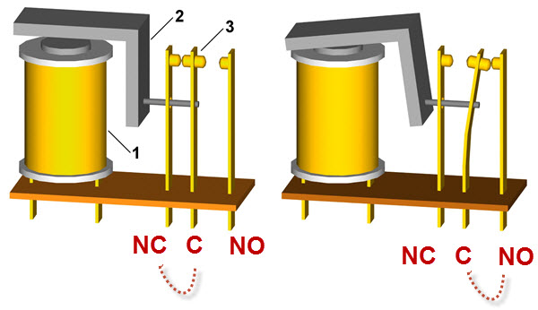
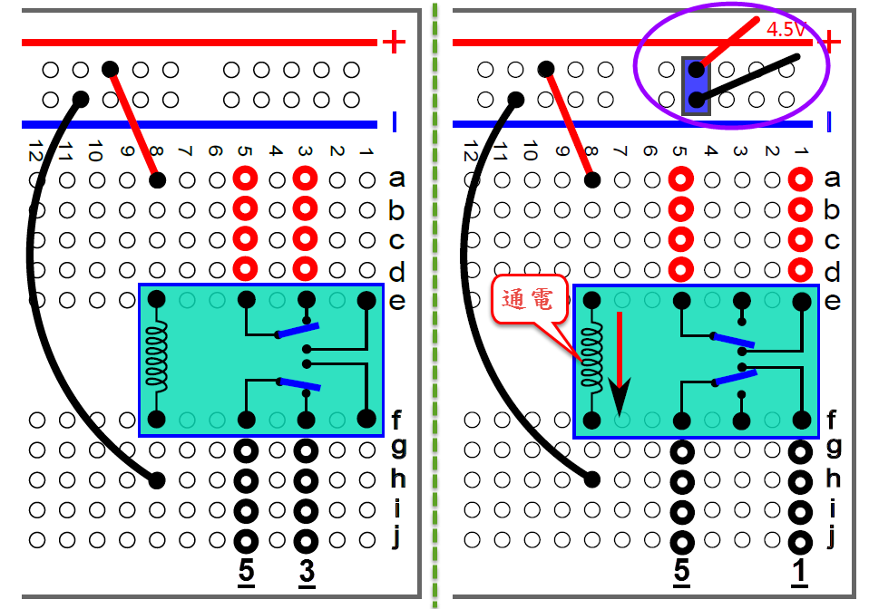
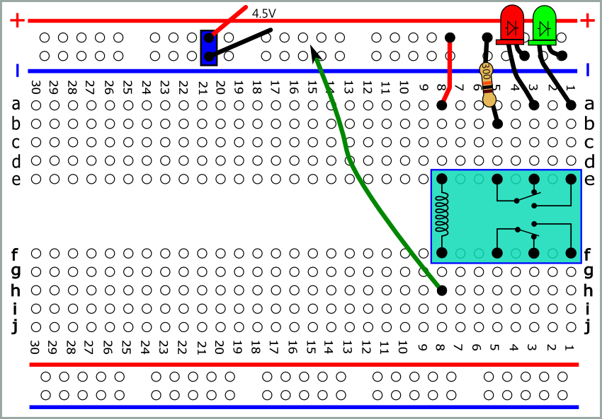
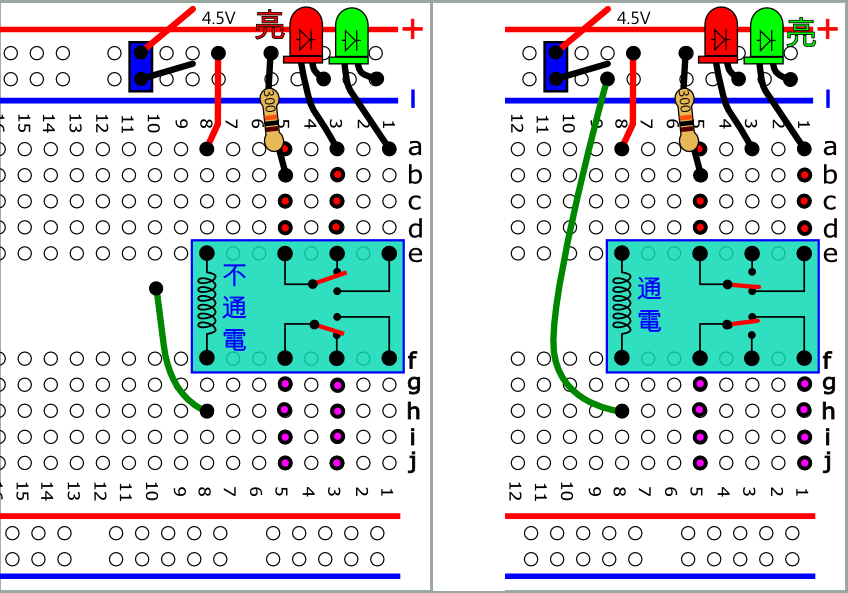
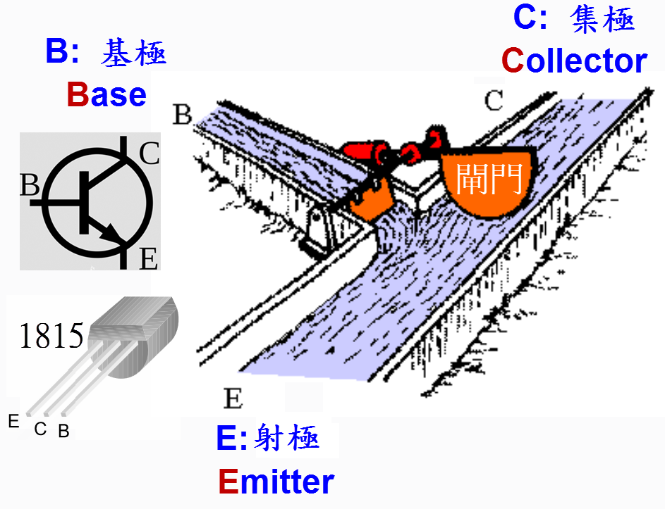
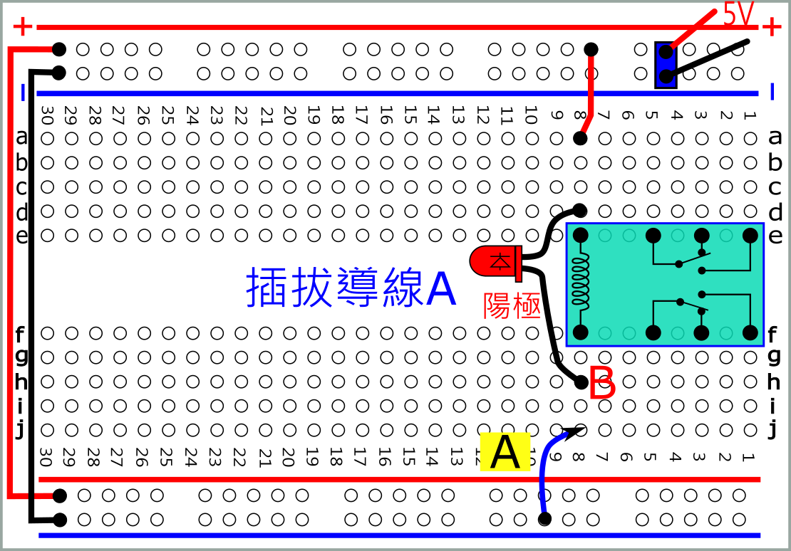
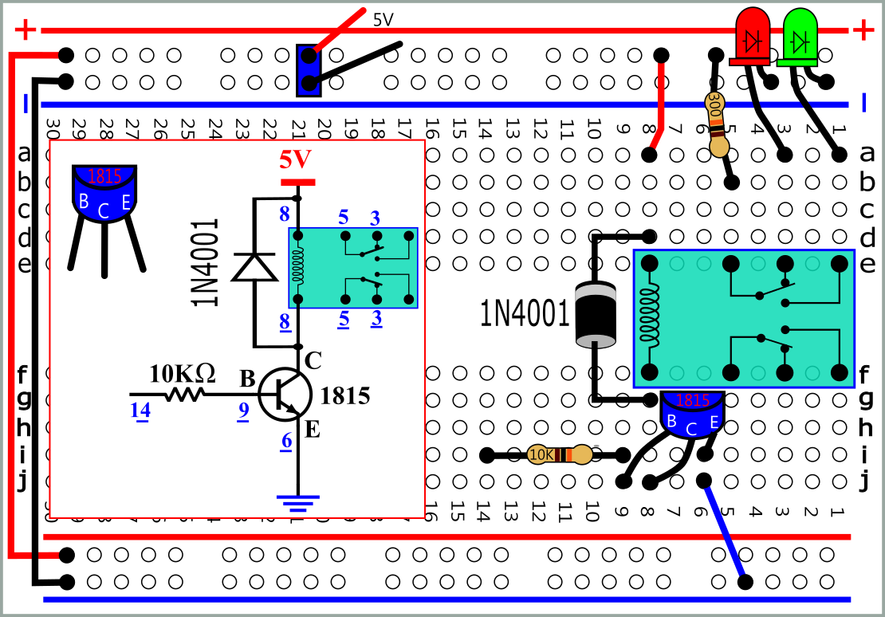
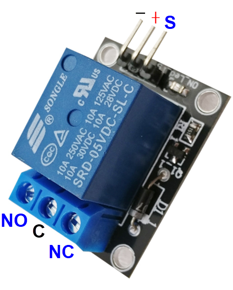
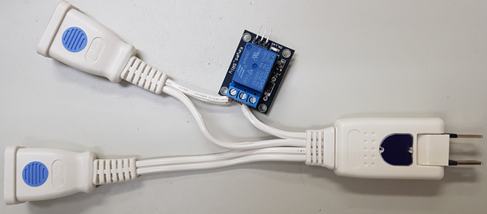

 pdf svg |
| 將
綠線一端接地(-)後再拔離，重複插拔動作。 觀察LED 並注意聽聽聲音 |
 pdf svg pdf svg |
  |
 pdf svg |
 |
 |
 |
 簡單測試說明: 模組輸入與輸出電氣絕緣，供上對應正確電壓後，只需在輸入排針上接上高電平(如與VCC短路)就能讓繼電器吸合，不接或接低電平(如與GND短 路)繼電器不動作。  |
| 紅外線遙控器 控制繼電器 | 微控器 程式控制繼電器 |